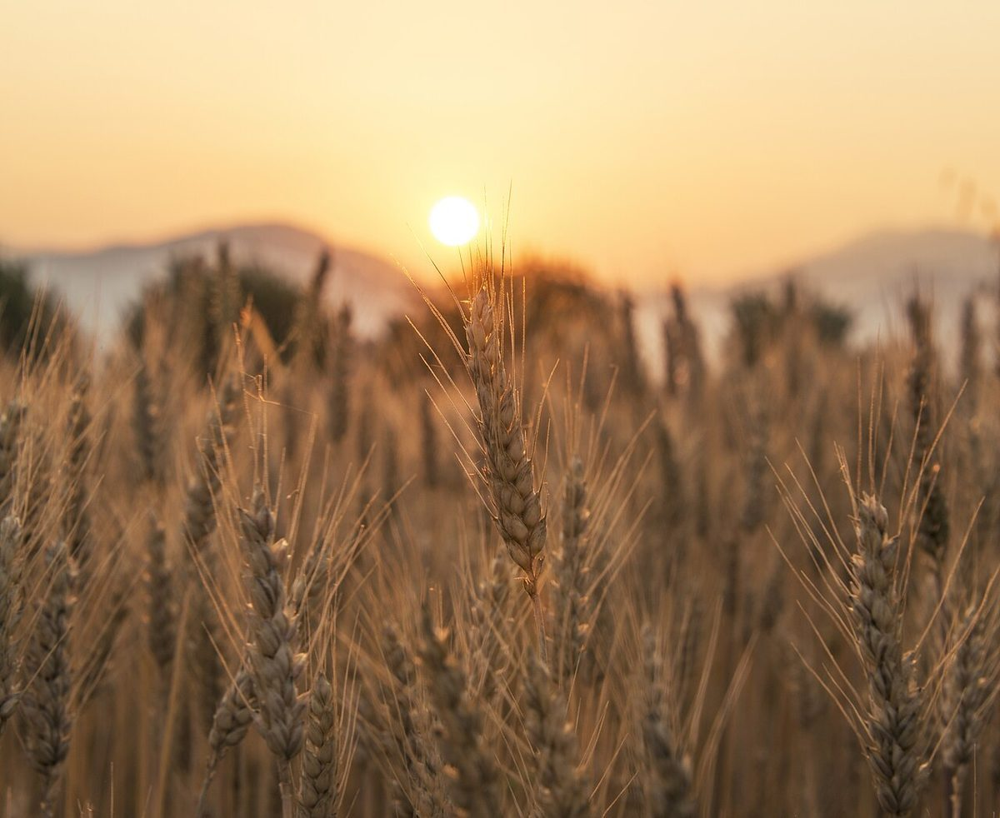

制作側の連想
「粉を100とする」配合表のように
パン作りには、粉の重さを100として、水や塩などをその割合で表す書き方があります。このサイトは、その配合表になぞらえて作りました。ページごとに「粉100」「水70」「塩2」「砂糖8」「酵母1」と名前を付け、棒の長さで割合を示しています(数字は表現のための例で、お店の配合ではありません)。
屋号の意味や由来は分かりません。「さとう」という響きから砂糖を連想したこと、福島市が果樹の盆地で、桃の町ともいわれることを思い浮かべたことも、すべて制作側の連想です。お店の理念・由来とは無関係です。
粉のまわりの景色(イメージ)
穂から、窯まで。
写真は福島市やお店のものではありません。国外・撮影地不明のフリー素材です。



ご案内
お店のこと(確認できたものだけ)
| 所在地 | 〒960-8054 福島県福島市三河北町3-16 |
|---|---|
| 電話 | なし |
| 営業時間 | 準備中 |
| 定休日 | 準備中 |
| ご予約 | 準備中 |
| 駐車場 | 準備中 |
| SNS | Instagram @satoupan418 |